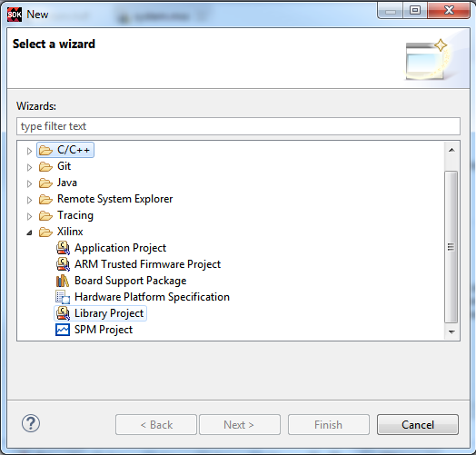

You can create a managed make library project by using the New Library Project wizard.
To create a library project:

| Standalone | Linux | |||||||
|---|---|---|---|---|---|---|---|---|
| Static Library | Static Library | Shared Library | ||||||
| Processor | Toolchain | Extra Compiler Flags | Archiver Flags | Extra Linker Flags | Extra Compiler Flags | Archiver Flags | Extra Compiler Flags | Extra Linker Flags |
| A9 | Linaro | "-mcpu=cortex-A9 -mfpu=vfpv3 -mfloat-abi=hard" | None | None | "--static" | None | "-fPIC" | "-shared" |
| A9 | Code Sourcery | None | None | None | "--static" | None | "-fPIC" | "-shared" |
| A53 | Linaro | None | None | None | "--static" | None | "-fPIC" | "-shared" |
| A53-32 Bit | Linaro | "-march=armv7-a" | None | None | "--static" | None | "-fPIC" | "-shared" |
| R5 | Linaro | "-mcpu=cortex-r5" | None | None | NA | NA | NA | NA |
| MicroBlaze™ | Xilinx® | "-mcpu=v9.5 -mlittle-endian -mno-xl-soft-mul -mxl-barrel-shift -mxl-pattern-compare" | "-mlittle-endian" | None | "--static" | None | "-fPIC" | "-shared" |
| Option | Description |
|---|---|
| Linux | Shared libraries can be created only on the Linux OS platform. |
| Standalone | Select this option if you plan to create a library for FreeRtos. |